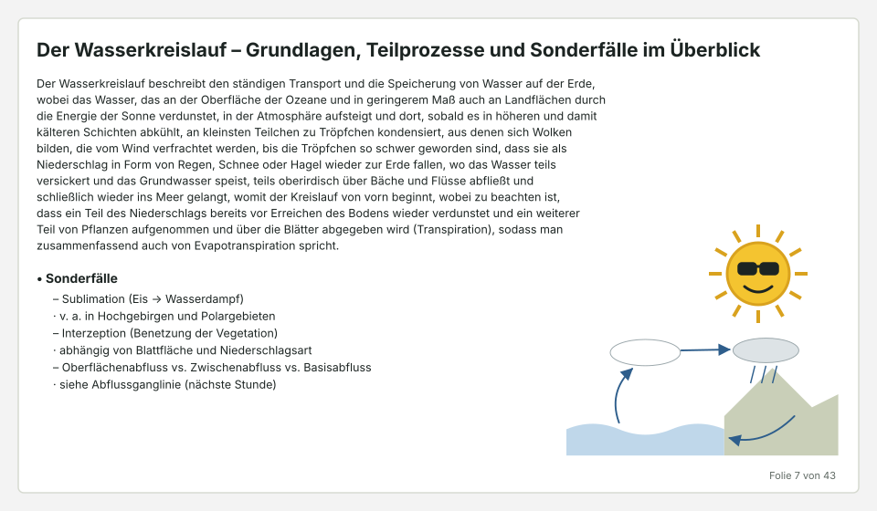
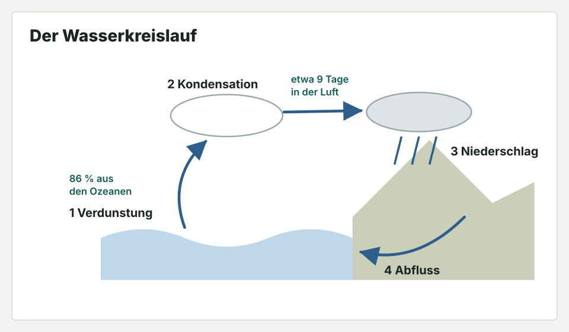
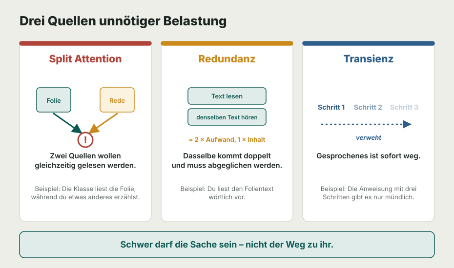

Wie halte ich den Kopf meiner Schüler frei für das, worauf es ankommt?
Das Arbeitsgedächtnis ist eng, das weißt du aus Modul 3.1. Heute geht es darum, was es unnötig füllt: überladene Folien, vorgelesene Texte, Anweisungen, die nur gesagt werden.
Dein Weg durch dieses Modul
Nach dem Abruf erlebst du denselben Inhalt zweimal: einmal auf einer überladenen Folie, einmal entschlackt. Du lernst drei Quellen unnötiger Belastung kennen, ordnest Unterrichtsmomente zu und operierst eine Folie. Zum Schluss prüfst du ein eigenes Material mit der Checkliste.
Sechs Fragen, bevor es losgeht.
Drei zum letzten Modul, zwei zu älteren, eine aus einem früheren Block. Ohne Unterlagen. Dass die älteren schwerer fallen, ist gewollt.
Derselbe Inhalt, zweimal.
Du siehst zweimal 30 Sekunden lang eine Folie zum Wasserkreislauf. Unter der Folie läuft mit, was die Lehrkraft dazu sagt. Danach kommen drei Fragen.
Durchgang 1

noch 30 Sekunden
Durchgang 2
Erst nach Durchgang 1.

noch 30 Sekunden
Schwer darf die Sache sein, nicht der Weg zu ihr.
Es geht nicht darum, Unterricht leicht zu machen. Die Schwierigkeit der Sache selbst ist erwünscht, an ihr wird gelernt. Bekämpft wird alles drumherum, das Platz belegt, ohne dass etwas gelernt wird.

Bild und gesprochenes Wort
Auge und Ohr ergänzen sich, wenn das Auge ein Schaubild bekommt und das Ohr die Erklärung (Dual Coding). Bild plus Textblock plus Vortrag ist das Gegenteil davon.
Faustregel für jede Folie: ein Gedanke, ein Träger (Bild oder Text), der Rest kommt aus deinem Mund.
Welche Quelle ist es?
Was bleibt, was sagst du, was fliegt raus?
Hier ist die Folie aus Durchgang 1 noch einmal. Entscheide für jedes Element.
So sieht das Ergebnis aus
Jetzt deine eigene Folie oder dein Arbeitsblatt.
Nimm ein Material, das du in den nächsten zwei Wochen einsetzt. Am besten das, bei dem du schon ahnst, dass es zu voll ist.
Checkliste
Fünf Fragen zu Modul 3.2.
Zu jeder Antwort bekommst du eine kurze Rückmeldung, auch zu den falschen.
F6 (Freitext): Operiere die Horror-Folie (Anhang 1.1) in drei Schritten: Was fliegt raus, was bleibt, was wandert in deinen Mund?
Muster: Fließtext raus → Diagramm groß als einziger Träger; die zwei Zahlen als Beschriftung AN die Pfeile (Transienz-Schutz); Erklärung + Sonderfälle mündlich; Clipart-Sonne entsorgen.)* --- # Anhang 3: Ableitung für die SPA „Modul 3.2" 1. **Hook (3 Min., Selbsterleben!):** Der Doppel-Versuch digital: Horror-Folie 60 Sek. mit Vorlese-Audio → 3 Quizfragen → Zwilling 60 Sek. mit freiem Audio → 3 Parallelfragen → Ergebnisvergleich als persönliche Balkengrafik. („Dein eigenes WM hat gerade ausgesagt.") 2. **See it (3 Min.):** Die drei Fresser als animierte Kanal-Grafik (zwei Ströme kollidieren / doppelter Strom / verwehender Strom). 3. **Name it (3 Min.):** Checkliste als Karten; Fresser-Zuordnung: 6 Unterrichtsmomente → Split/Redundanz/Transienz. 4. **Do it – Folien-Makeover-Spiel (8 Min., Engine!):** Überladene Beispielfolie → Elemente antippen: behalten / streichen / „in den Mund" (wird zu Sprechtext) / „an die Tafel" (bleibt stehen) → App rendert die entschlackte Version + bewertet gegen Musterlösung; 3 Level (NaWi/Sprache/Gesellschaft); danach: eigenes Material als Foto hochladen und mit geführter Checkliste selbst operieren. 5. **Dual-Coding-Galerie:** die 3 Paare als Vergleichs-Swipes mit Fresser-Benennung. 6. **Quiz (Teil 2
Dein Action Step bis zum nächsten Input.
Wähle einen Action Step. Er gilt für zwei Wochen; in der Austauschwoche schärfst du ihn nach.
Meine Strichliste
Sei ehrlich: Wie oft hast du dich beim Vorlesen ertappt? Die Zahl soll über die Tage fallen.
Exit-Karte (fließt ins nächste Coaching-Gespräch ein)
Deine Ergebnisse teilen
„Bei Coach einreichen“ schickt deine Antworten an deinen Coach. Der PDF-Export öffnet zusätzlich den Druckdialog deines Geräts.